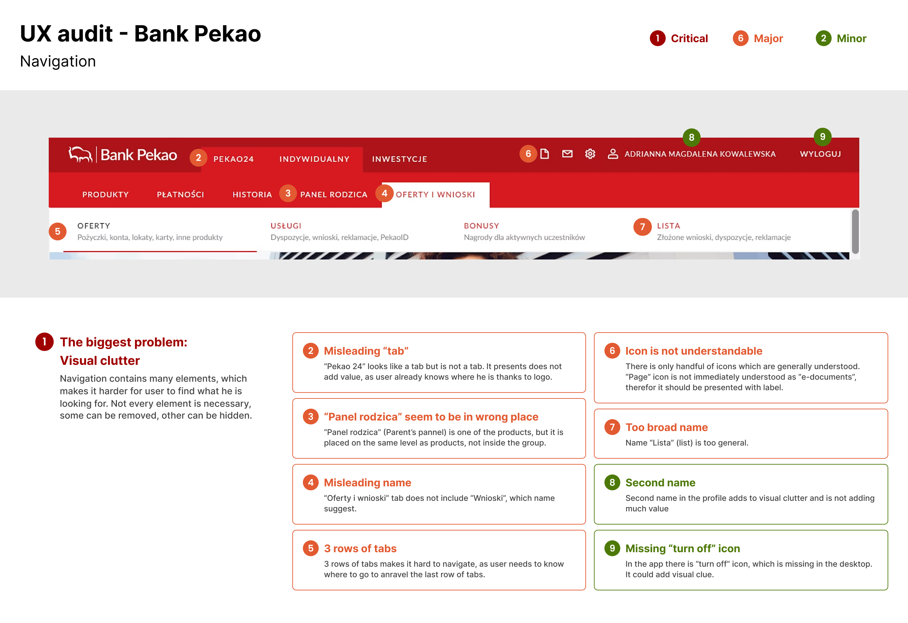
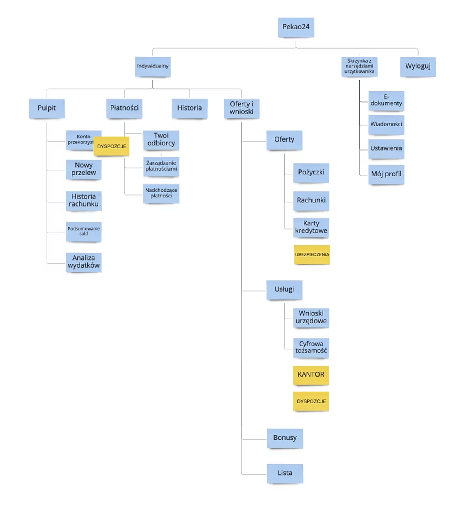
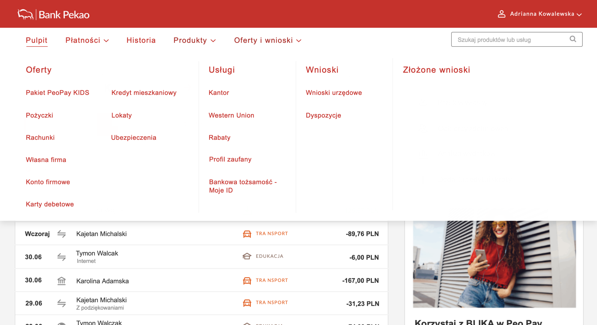

Information Architecture
and Navigation
Five product owners, all convinced their product deserved top-level visibility. A navigation nobody owned. And a design solution that made the argument stop.
Navigation nobody had formally designed. Five stakeholders competing for top-level slots. No clear framework for placing future products.
Stakeholder workshops · Desk research · UX audit · Card sorting · Usability testing · Guidelines document · UI handoff.
Megamenu design that dissolved stakeholder conflicts. An 11-page guidelines document to handle future placements without politics. Navigation went to production.
Bank Pekao is one of the largest banks in Poland. The website had grown organically over years — new products, new departments, new initiatives, each one competing for space in the navigation. The result was a menu nobody owned and nobody had formally designed.
Two new products needed a home: a currency exchange feature and an insurance offering. But the deeper question was bigger — how do you build a navigation structure that can actually grow without breaking every time something new appears?
There was no budget for external research. There was no Project Owner on the business side. And there were five product owners, each convinced their product deserved top-level visibility.
I was the sole UX Designer on the project. I planned and ran the entire design process. I worked with a UX Team Leader who owned the project, a UX Researcher who conducted research sessions, and five product owners representing different products in the navigation.
I started with a workshop with all five product owners. The goal was to align on business objectives. What I walked into was closer to a negotiation — people were arguing, literally, over whose product deserved to be in the main navigation and why.
I ran a UX audit while that tension was simmering. Eleven issues. The most structurally damaging: three levels of tabs that left users unable to tell where they were, no search, and an offer page so long the only way to explore it was to scroll through everything.

The UX audit identified 11 issues — from visual clutter and misleading tab names to missing search and icons without labels. The old navigation had three rows of tabs, making it structurally impossible for users to orient themselves.
To answer where the new products should live, I proposed card sorting and tree testing. No budget for external participants meant running sessions with internal employees who didn't use the bank in their daily work — not ideal, but better than guessing. The researcher helped select participants; I observed and drew conclusions.

Card sorting results — blue cards represent the existing architecture, yellow cards are the new products users had to place. The exercise answered the placement question and surfaced something unexpected: users wanted a dedicated category for products they currently hold, which didn't exist anywhere in the current navigation.
The audit pointed clearly toward a megamenu. Three levels of tabs needed to go. A megamenu would let users scan all levels at once, support discoverability, and handle deeply nested content without confusion.
But the megamenu did something else too. When only a handful of top-level slots existed, every product owner was fighting for one. The megamenu changed that — it made every product equally visible regardless of hierarchy. The competition for top-level placement stopped making sense.
I presented the new design to all five stakeholders. The room went completely silent. No questions. No arguments about who should be where. Just silence. That was the moment I knew the design had done its job.

Before: the original navigation — three rows of tabs, no search, limited top-level slots that every product owner was fighting over.

After: the new megamenu — all levels visible at once, every product equally accessible regardless of hierarchy. The design solved the political problem by making scarcity disappear.
Beyond solving the immediate placement problem, I created an 11-page guidelines document for product owners — a practical reference for placing new items in the navigation as the bank continued to grow. It included decision rules, worked examples, a questionnaire, and a dictionary of terms. Designed to outlast the project.


An 11-page guidelines document for product owners — including decision rules, worked examples, and a questionnaire to help them determine where new products belong in the architecture. Left: the rules for level 2 navigation categories. Right: the decision questionnaire — if all answers are A, the product belongs on the second navigation level.
The two new products got a logical home in the navigation. The guidelines document gave product owners a framework for placing future products without turning every launch into a negotiation.
The redesigned navigation went into production — though the full rollout happened some years after the project concluded.
Sometimes the stated problem and the real problem are different. The stated problem was where to put two products. The real problem was that the navigation had become a battleground. Solving the political problem required a design solution, not a facilitation one — and that's not something I could have seen without the stakeholder workshop at the start.
I also learned that constraints don't have to compromise quality. No budget, no external participants, no project owner on the business side — and we still produced something that ended a conflict and went to production.